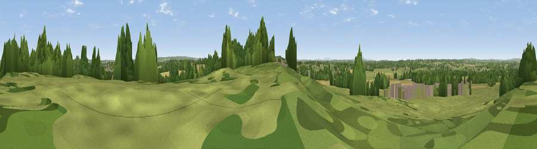

Viewpoint near Derrington
#35336 in England · top 67% of its area beats it · near DerringtonThe view, rendered

A 360° render of this exact spot computed from the terrain model, tree cover and land cover — summer colours, afternoon light, calibrated against photographs of famous viewpoints. Real trees, hedges and buildings will differ in detail.
The panorama
Grey silhouette: terrain skyline in each direction (720 bearings, Earth curvature and refraction included). Dashed green: skyline with trees (+15 m) and buildings (+8 m) as obstacles. Blue strip: how far the ground is visible on each bearing.
Where the view opens
Wedge length = distance to the farthest visible ground on that bearing (vegetation-aware). Rings at 10, 25 and 50 km.
What fills the view
54% grassland · 24% cropland · 16% woodland · 5% built-up
Angular shares of the visible panorama (visual magnitude), not map area. Landscape diversity 0.50 (0–1 Shannon).
Key numbers
More beautiful places nearby
The staircase of upgrades: each row has a higher view potential than everything closer. Driving times are estimates from straight-line distance, calibrated against real road routing — check an actual route before setting out.
| Place | Direction | Drive | Score |
|---|---|---|---|
| Viewpoint near Haughton | S · 1 km | ~3 min | 47.4 |
| Willowmore Hill | S · 2 km | ~4 min | 55.3 |
| Stafford Castle | NE · 2 km | ~5 min | 60.6 |
| Viewpoint near Sheriffhales | WSW · 13 km | ~24 min | 63.8 |
| Viewpoint near Sheriffhales | WSW · 14 km | ~25 min | 64.4 |
| Viewpoint near Newport | W · 15 km | ~27 min | 66.4 |
| Viewpoint near Priorslee Village | WSW · 19 km | ~32 min | 70.4 |
| The Ercall | WSW · 27 km | ~43 min | 79.4 |
52.78758, -2.16936 · source: screening · position refined by local search. Computed location — check access rights before visiting.